Katsuragi, Wakayama: things to do, food and stays
Katsuragi · Wakayama
Katsuragi
Highlighted on the Wakayama map.
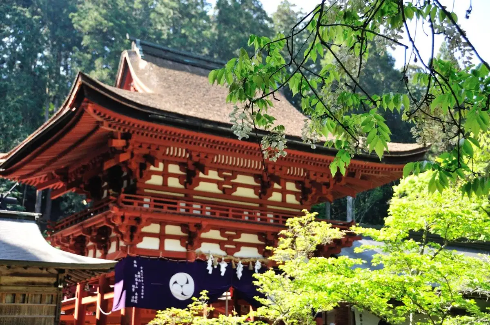
Stay
山荘 天の里
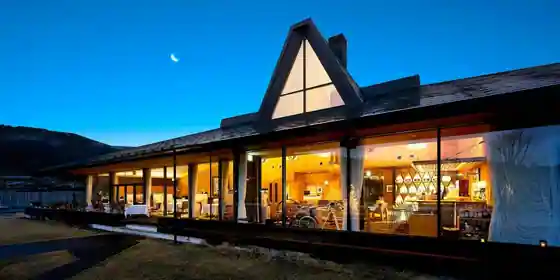
Sanso No Sato
かつらぎ温泉 八風の湯 宿「八風別館」
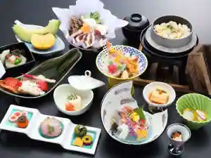
Katsuragi Onsen Happu No Yu Yado (Happu Bekkan)
Inn at Katsuragi Onsen in Sano, Katsuragi with free-flowing hot spring baths and open-air baths.
いやしのコテージみらい
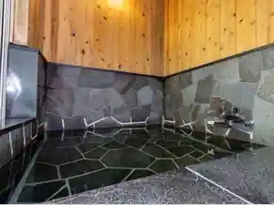
Iyashino Cottage Mirai
Cottages in Nakameshiko, Katsuragi with family-friendly stays.
Dining
あまの凡愚
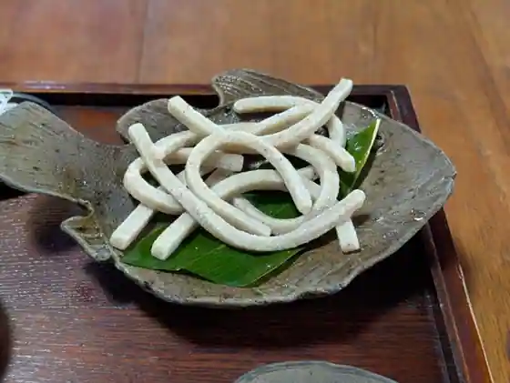
Amano Bongu
峠のうなぎ 美しま
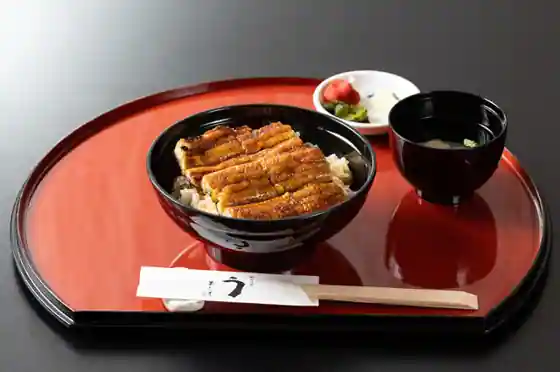
Toge Nonagi Utsukushi Ma
笑福亭
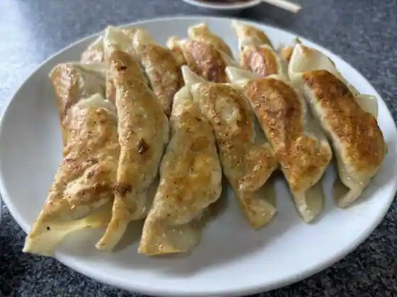
Shofukutei
二軒目飯店
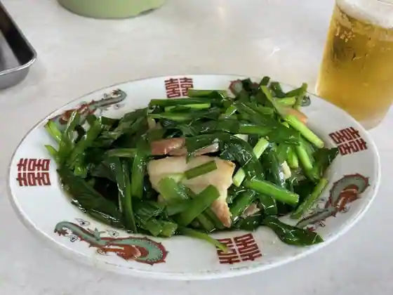
Niken Me Meshi
KIGURI CAFE
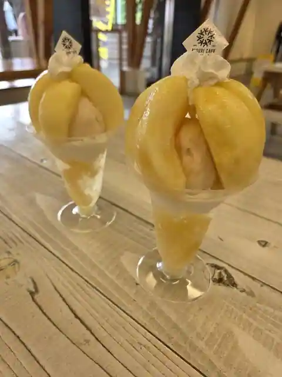
KIGURI CAFE
道の駅くしがきの里
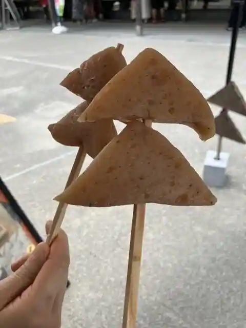
Michi No Eki Kushigakino Sato
道の駅 かつらぎ西
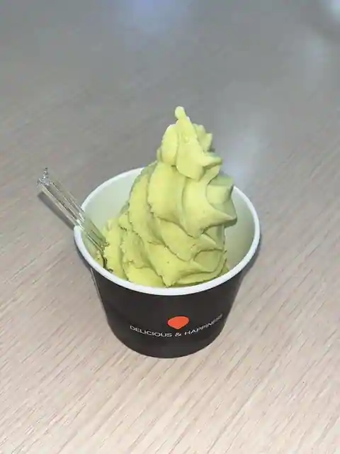
Michi No Eki Katsuragi Nishi
かつらぎ温泉 八風の湯
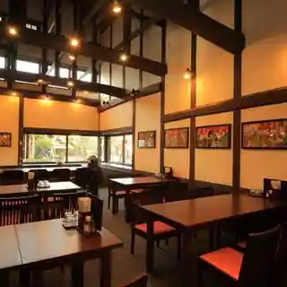
Katsuragi Onsen Happu No Yu
らぐまん かつらぎ店
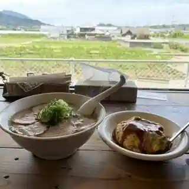
Raguman Katsuragi
こんにゃく工房
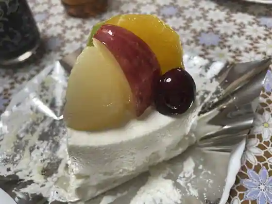
Konnyaku Kobo
かつらぎ西カフェROUTE24
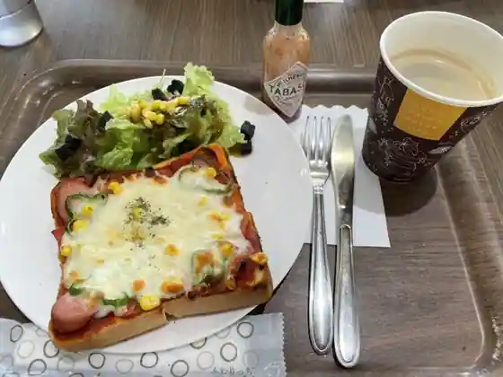
Katsuragi Nishi Cafe ROUTE24
ウエストコースト
Uesutokosuto
えびす食堂
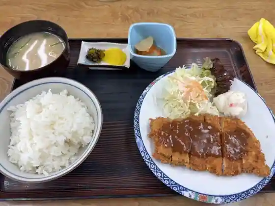
Ebisu Shokudo
一力
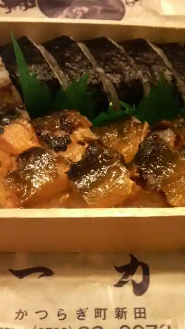
Ichiriki
道の駅 紀の川万葉の里
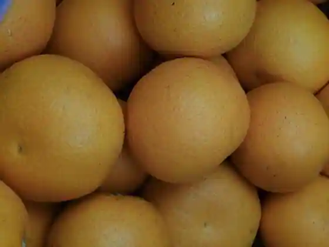
Michi No Eki Ki No Kawa Manyo No Sato
あげパン専門店 フライパン
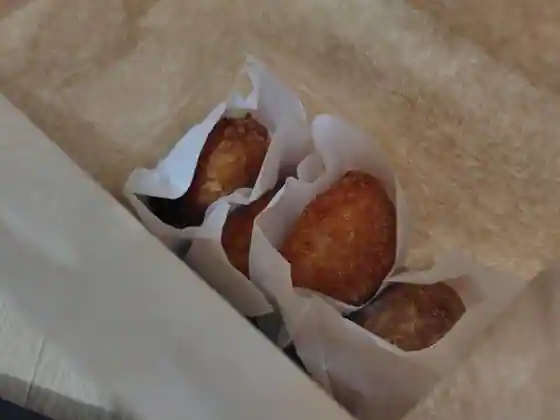
Age Bakery Senmon Furai Bakery
道の駅 かつらぎ西食堂
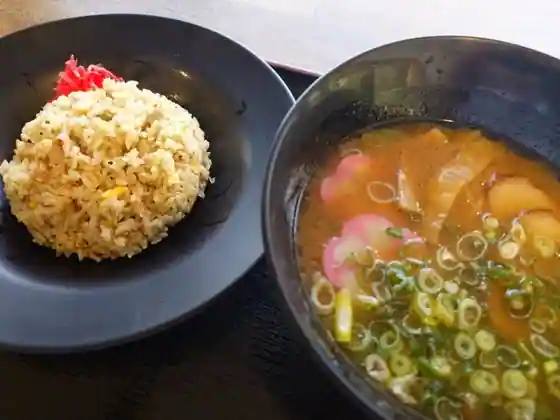
Michi No Eki Katsuragi Nishi Shokudo
歩里人珈琲
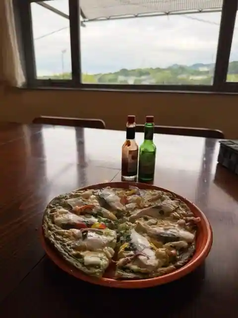
Ho Satobito Coffee
Cafe 客殿
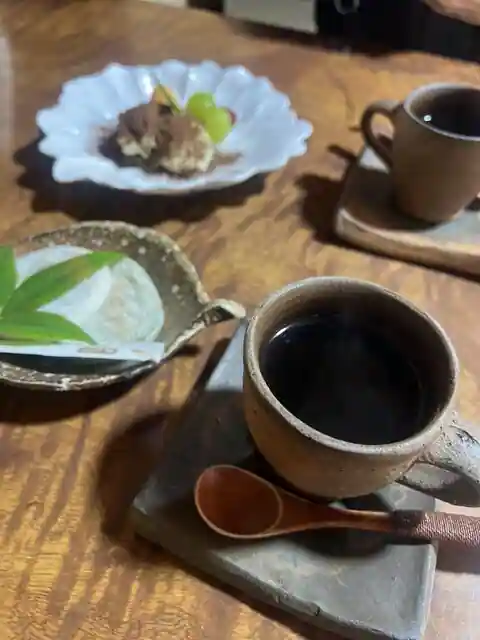
Cafe Kyakuden
スタンドバイミー
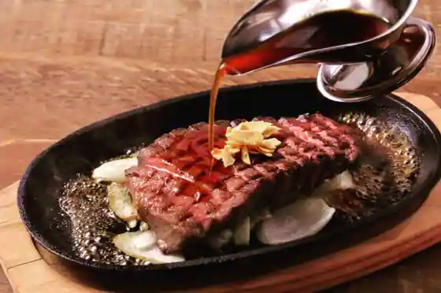
Sutandobaimi
中華厨房 まきの
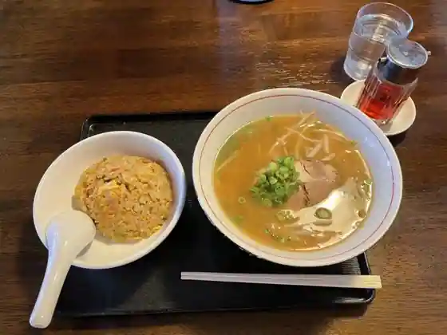
Chuka Chubo Makino
ｍｕｔｅ．
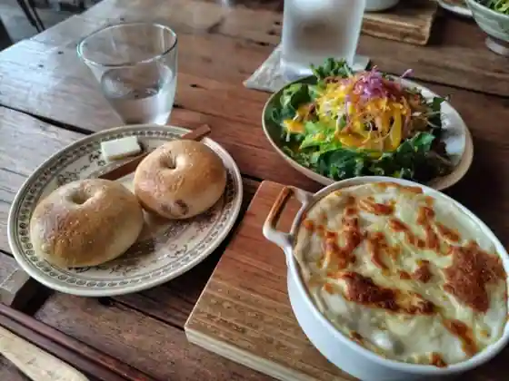
mute.
うどん 西浦
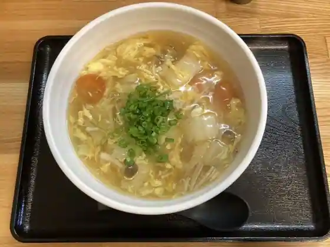
Udon Nishiura
Sights
Kohara Dokutsu Kyoryu Land
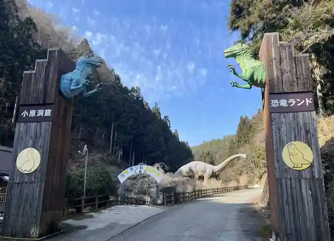
Roadside Station Katsuragi Nishi (Kudari Sen)
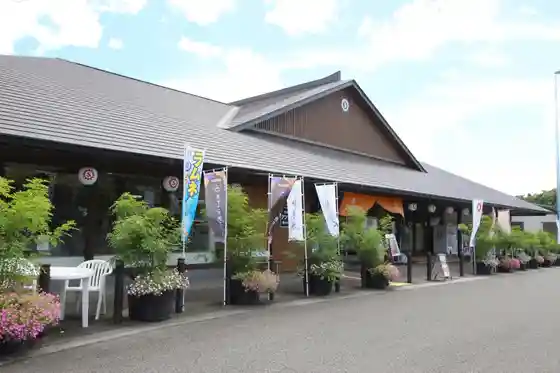
Roadside Station Kushigaki Village
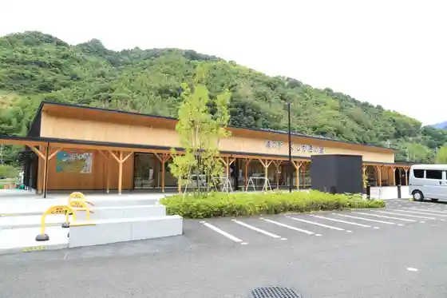
Niuzuhime Shrine
Tanjo Sake Dono Shrine
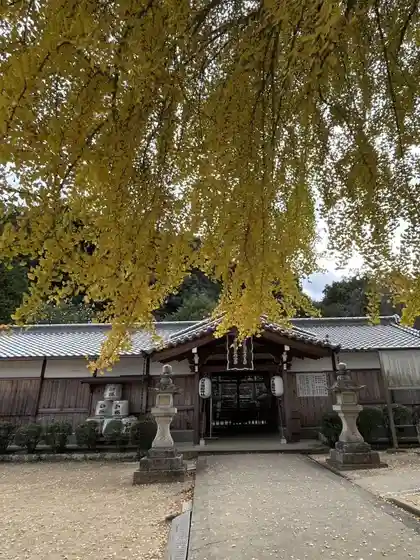
Kama Hachiman Shrine
Katsuragi Seibu Koen Park Gorufu Ba
Roadside Station Ki no Kawa Manyo Village
Bunzo Falls
Roadside Station Katsuragi Nishi (Nobori Sen)
Katsuragi Park
Horai Yama Shrine
Flower Garden Ajisai Sono
AWESOME CAMP HACHIMORI
Horikoshi Shaku Kannon
Hatsuzakura Shuzo
Flower Garden BASE Nakaminami CAMP
Kongo no Taki Famirii Campground